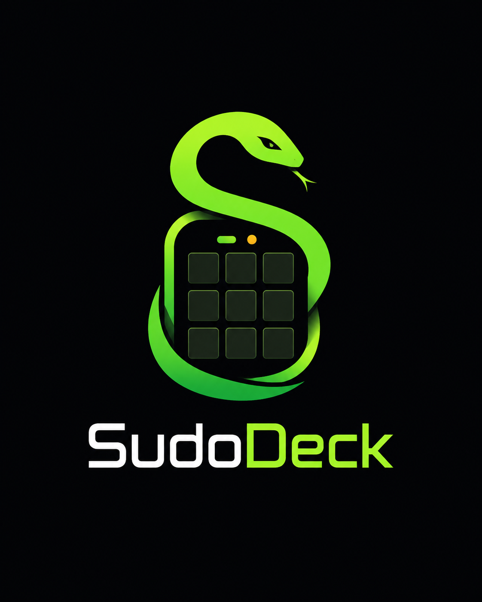

The only wireless, open source macro deck — built in South Africa.
Pair via Bluetooth. Configure from any browser. No subscriptions. No compromises.
Pair once via Bluetooth. Works on any PC, Mac, or phone. No daemons, no drivers, nothing to install.
Edit every button's label, color, and action from your browser. Build macros, combos, and text snippets.
All config lives on the device's flash. Unplug it, move to another machine, your layout follows.
MIT licensed. Fork it, hack it, build your own. The code is yours — modify it however you see fit.
R1,099 pre-assembled and delivered. Half the price of the cheapest Stream Deck — with more features. DIY option from ~R300.
Standard Bluetooth HID — your computer sees a real keyboard. Instant, reliable, no extra software needed.
Set an action type to "App Launcher", select your OS (Windows/macOS/Linux), type the app display name, and press the button. The device opens the OS search and launches the app (~250ms).
Edit multi-step macros with combo (modifier+key) and delay steps. Combo steps show a mod dropdown and key input. Delay steps show ms.
See how SudoDeck stacks up against the competition.
| SudoDeck | Stream Deck Mini | Stream Deck MK.2 | |
|---|---|---|---|
| Price (SA) | R1,099 | R1,799 | ~R2,800 |
| Connection | BLE Wireless | USB Wired | USB Wired |
| Buttons | 20+ touch (multi-page) | 6 physical LCD | 15 physical LCD |
| Open Source | MIT ✓ | ✗ | ✗ |
| Config Software | Built-in web page | Proprietary app | Proprietary app |
| Config on Device | Yes ✓ | ✗ | ✗ |
| Screensaver | 3 modes | None | None |
| Built In | South Africa | Imported | Imported |
SudoDeck is the only wireless, open source macro deck on the market — at nearly half the price of the nearest competitor. Plus you're supporting local.
cheap. open. yours. — A wireless macro deck built on ESP32.
Pair over Bluetooth, configure from your browser. R1,099 in SA. Open source.
Macro decks shouldn't cost a hundred dollars. Affordable tech is a right, not a privilege. SudoDeck is our answer — open hardware and open software that anyone can build, modify, and own.
All configuration stays on the device. No cloud sync, no accounts, no telemetry. When you unplug SudoDeck, your layout follows — because it never left.
MIT licensed. The firmware, the website, the config tool — everything is public. Fork it, hack it, build something new.
Single keys, key combos, text strings, macro sequences — every button does what you want. No restrictions, no paid upgrades.
built by Shahid Singh